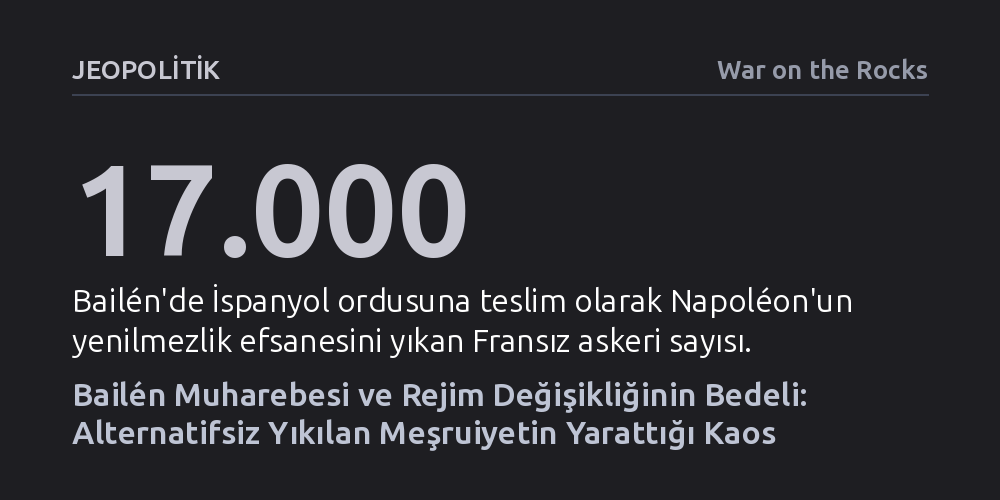

JEOPOLITIK · War on the Rocks · 2026-10-27
1808 Bailén Muharebesi, Napoléon ordusunun ilk büyük yenilgisini kayda geçirirken, meşru bir yönetimin alternatifsiz devrilmesinin doğuracağı kontrolsüz bölgesel parçalanmayı kanıtladı. Bu tarihi hezimet; Irak, Libya ve Afganistan gibi modern müdahalelerde tekrarlanan otorite boşluğu tuzağını iki asır önceden belgeliyor.
Askeri zaferlerin ve taktik üstünlüğün, devrilen meşru otoritenin yerine kabul gören yeni bir siyasi düzen kurulmadığı takdirde kaçınılmaz bir stratejik hezimete dönüşeceğini gösterir.

1808 yılının kavurucu Temmuz ayında, Endülüs’ün Bailén köyü yakınlarında gerçekleşen muharebe, tüm Avrupa’yı sarsan beklenmedik bir tarihi kırılmaya sahne oldu. General Pierre Dupont komutasındaki 17 bin kişilik Fransız kolordusu; açlık, susuzluk ve yoğun kuşatma altında silahlarını, sancaklarını ve imparatorluk kartallarını İspanyol ordusuna teslim etti. Üstelik bu teslimiyeti kabul eden İspanyol birliklerinin önemli bir kısmı, yalnızca sekiz hafta önce eline ilk kez tüfek almış acemi köylüler ve gönüllülerden oluşuyordu. Prusya ve Avusturya gibi kıtanın en köklü askeri güçlerini dize getiren Napoléon’un yenilmezlik aurası, ilk kez bir meydan savaşında bu kadar aşağılayıcı biçimde yerle bir edildi.
Taktik açıdan sıradan bir çatışma gibi görünse de Bailén’in stratejik yankıları muazzam oldu. Dupont gibi parlak ve geleceğin mareşali olarak görülen bir kurmayın tek bir günde bütün ordusunu teslim etmesi iki tarafı da hayretler içinde bıraktı. Teslim olan Fransız askerlerinin kaderi ise son derece trajikti; İspanyol cuntaları ve müttefik İngiliz donanması centilmenlik anlaşmalarına uymayarak esirleri Balear Adaları’ndaki çorak kamplara sürdü ve bu askerlerin ancak üçte biri altı yıl sonra özgürlüğüne kavuşabildi. Bailén, Napoléon’un Avrupa’da kurmak istediği yeni kıtasal düzenin ilk ve en ölümcül tökezlemesiydi.
Bu hezimetin arka planında, Napoléon’un siyasi kibrinin ve yanlış hesaplarının adım adım ördüğü bir kriz yatıyordu. İspanya’daki Bourbon hanedanı; Kral IV. Carlos, kraliçe, kraliçenin sevgilisi ve başbakan Manuel de Godoy ile veliaht Prens Fernando arasındaki entrikalarla zaten içeriden çürümüştü. Fransız İmparatoru, Portekiz seferini bahane ederek 90 bin askerini Pireneler’den geçirip kritik kaleleri işgal ettikten sonra, kraliyet ailesini Fransa sınırındaki Bayonne’a davet ederek tahtlarından çekilmeye zorladı. Yerine kardeşi Joseph Bonaparte’ı kral ilan eden Napoléon, kıtadaki diğer hükümdarları dehşete düşüren bu pervasız darbenin İspanyol halkı tarafından sessizce kabullenileceğini varsaydı.
Fakat Madrid sokakları bu hesabı hızla bozdu. 2 Mayıs 1808’de hanedanın son üyelerinin de şehirden götürülüşüne tepki gösteren halk ayaklandı; Mareşal Murat’ın Memlük süvarileri ve topçu ateşiyle yüzlerce sivili katletmesi direnişi söndürmek yerine daha da alevlendirdi. Başkentteki kanlı misillemeler, yüzyıllardır Madrid ile mesafeli olan özerk bölgeleri birleştiren bir kıvılcıma dönüştü. Asturias, Valensiya ve Endülüs gibi bölgelerde yerel savunma konseyleri (cuntalar) iktidarı devralarak genel seferberlik ilan etti. Fransız ordusu artık düzenli bir devletle değil, hem coğrafyanın sertliğiyle hem de arkasına halk desteğini alan amansız bir gerilla dalgasıyla karşı karşıyaydı.
İsyanı bastırmak için güneye yönelen General Dupont, harekât alanının lojistik gerçeklerini tamamen göz ardı etti. Napoléon’un geri çekilmeyi kesin bir dille yasaklaması, komutanları sahadaki esnekliklerinden mahrum bırakmıştı. Dupont, Córdoba’yı ani bir baskınla ele geçirip şehri ve kutsal mekânları acımasızca yağmalayarak Endülüslüleri yıldırabileceğini sandı; oysa bu vahşet yerel direnişi topyekûn bir ölüm kalım savaşına çevirdi. İspanya bozkırlarında ikmal hatları kopan Fransız birlikleri, tarihi bir askeri gerçeğin pençesine düştü: "İspanya, küçük orduların yenildiği, büyük orduların ise açlıktan kırıldığı bir ülkedir."
Fransız komutan, İspanyol generali Francisco Javier Castaños ve İsviçreli kurmay Teodor von Reding’in manevraları karşısında bocaladı. Bölgedeki tek anayolu ve Sierra Morena geçitlerini emniyete almayan Dupont, asılsız söylentiler yüzünden yardım kuvvetlerini yanlış yönlendirerek kendi cephesinde 50 kilometrelik devasa bir boşluk yarattı. 19 Temmuz sabahı 40 dereceyi aşan çöl sıcağında, iki İspanyol hattının arasına sıkışan Fransızlar, dağınık ve koordinesiz hücumlarla tükendi. Dupont’un saflarındaki İsviçreli paralı askerlerin de soydaşlarının tarafına geçmesiyle savunma çöktü ve Fransız ordusu tarihindeki en utanç verici toplu teslimiyet anlaşmasını imzalamak zorunda kaldı.
Bailén zaferi, Napoléon’u İspanya’ya 300 bin kişilik devasa bir orduyla bizzat müdahale etmeye zorladı; imparator meydan savaşlarını kazansa da ömrünün sonuna dek onu yıpratacak olan 'İspanyol çıbanı'nı asla iyileştiremedi. İspanya cephesi, İngiltere’nin kıtaya Wellington önderliğinde asker çıkarmasına zemin hazırladı ve Fransız İmparatorluğu'nun doğudaki gücünü kalıcı biçimde tüketti. Ancak madalyonun diğer yüzünde İspanyollar da zaferin meyvesini toplayamadı; meşru kralın yokluğunda gücü ele geçiren yerel cuntalar yetkilerini merkezi bir idareye devretmeyi reddetti ve ülke uzun yıllar süren siyasi bir felce gömüldü.
Bailén’in modern ulusal güvenlik analistlerine verdiği en kritik ders, dış müdahale ile meşruiyeti olan bir yönetimin alternatifsiz devrilmesinin yarattığı felakettir. Napoléon, sevilmeyen bir hanedanı alaşağı ederken o tahtın yüzyıllardır Bask, Katalan ve Endülüs gibi derin bölgesel kimlikleri bir arada tutan harç olduğunu kavrayamamıştı. Otorite merkezi çöktüğünde ordu politize oldu, subaylar hangi efendiye itaat edeceklerini şaşırdı ve iktidar yerel silahlı gruplara dağıldı. Irak, Libya, Suriye ve Afganistan gibi çağdaş rejim değişikliği tecrübelerinde görüldüğü üzere; askeri zafer ne kadar süratli olursa olsun, yerine toplumun itaat edeceği meşru bir siyasi mekanizma ikame edilemediğinde doğanın tahammül edemediği iktidar boşluğu daima kaosa dönüşmektedir.